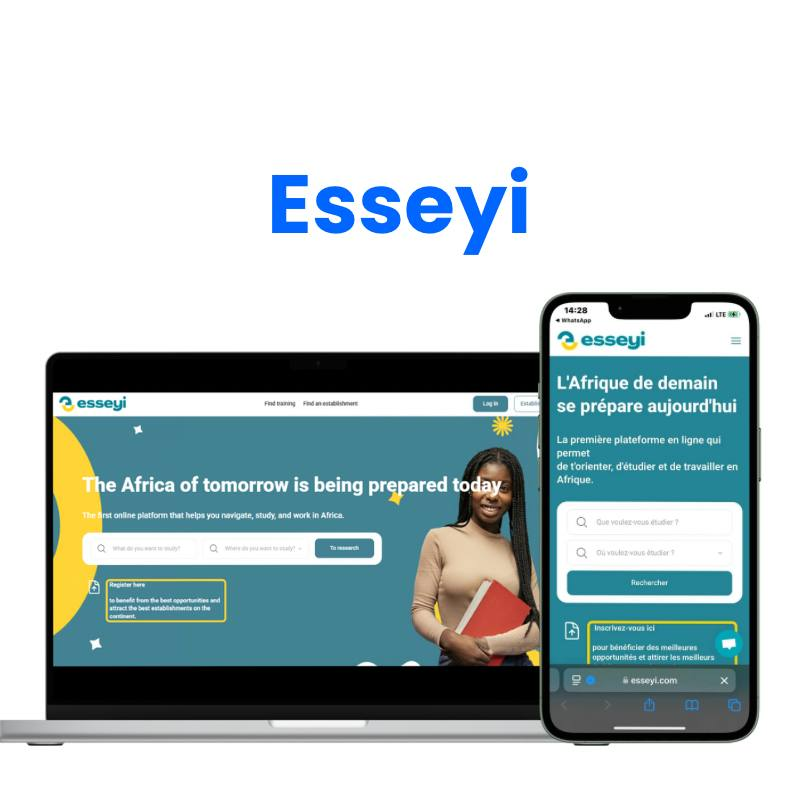

I Don't Just Build Apps. I Build the Thing Your Business Actually Needs.
I'm a systems-led product engineer. I build SaaS platforms that scale.
- 20+
- Apps shipped
- 15+
- Live platforms
- 5+ yrs
- Web design
- 95%
- Completion
You've Got the Vision. The Build Is Where It Falls Apart.
These aren't hypothetical struggles. These are the exact conversations I have every week with founders who found me right before they gave up.
$30,000 for an MVP. For something I've built in three weeks before.
Mid-project. No handover. No documentation. Just silence.
Every week it's one more thing. One more fix. One more delay.
Subscriptions aren't activating. Webhooks are silent. Revenue is leaking.
Nobody told you. Your users just left.
A real product with users, roles, payments, and logic — not just a website.
Full-Stack Product Development. No-Code First. Real Code When It Counts.
I don't hand you a prototype and wish you luck. I build the whole thing — architecture, design, development, integrations, and launch.
You have 8 weeks and a budget. I have the architecture already planned.
Not one app. Six. Interconnected, sharing users and data, under one brand.
Stripe is only as good as the person who wires it up. I build subscription systems that auto-activate, handle failures gracefully.
I embed OpenAI-powered assistants, content generators, voice interfaces, and intelligent automation.
Your Bubble app is broken. Your developer is gone. Your launch is tomorrow.
I redesign existing platforms to be cleaner, faster, more intuitive, and more competitive.
The stack I reach for first.
The complete inventory. Reached for selectively, not stacked for show.
Design
No-Code
Code
Backend
AI
Ops
From manual chaos to automated systems.
Live platforms. Real revenue. Real teams.
Dr. Saad Ajmal MD
Physician website and patient engagement platform with appointment booking, consultation forms, and medical profile management.
DojoChamp
Martial arts training platform with session scheduling, progress tracking, and community competition management.
Mwawazi
Legal services platform connecting clients with advocates and paralegal professionals, with case management and secure document workflows.

Esseyi
Modern e-commerce storefront with curated product collections, custom checkout flows, and integrated payment and fulfillment systems.

WeGlobalee
Global recruiting platform connecting remote talent with international companies, featuring automated interviews and matching.
I Build Things That Work. That's the Whole Job.
My name is Emmanuel Ajibewe. I'm a no-code developer, digital product builder, and the founder of Nocode Savvy — a one-person studio that punches well above its weight.
I got into no-code because I was tired of watching great ideas die in development backlogs. Bubble.io changed that for me. Today I use it to build production-grade web applications that would take a traditional dev team months to ship in weeks, at a fraction of the cost, without cutting corners on architecture or scalability.
I'm also a final-year Mechanical Engineering student and that background matters more than you'd think. Engineering teaches you to think in systems. To find failure points before they fail. To build things that don't just work today, but hold up under pressure.
When the job needs real code PHP, JavaScript, Python, I write it. When it needs no-code speed then I ship it. When it needs both, that's honestly where I do my best work.
Built and launched a complete MVP in under 48 hours for a client who thought it was impossible. It shipped. It worked. They were stunned.
No-code is a superpower. Real code is the utility belt. Together, they make you unstoppable.
What manual workflows actually cost you.
Don't Take My Word for It. Take Theirs.
Real reviews from real founders and businesses. Verified. Unedited. Exactly as written.
"We needed to ship a Supabase + Next.js dashboard in weeks for an upcoming investor meeting. Emmanuel didn't just write clean code—they helped us refine our database design, set up robust authentication, and integrated Stripe billing seamlessly. Absolutely stellar product engineer."
SKSarah K.Product Director, Velo
Live Changelog & Bug Tracker
In the spirit of build-in-public transparency, here is a live feed of active issues, in-progress updates, and resolved bug fixes across my projects.
Things People Ask
Before They Hit Send.
Rescue projects: 1–2 weeks. New MVPs: 3–6 weeks depending on complexity. Platform ecosystems: 6–12 weeks. I’ll give you an honest timeline after a free scoping call — not a number designed to win the project.
Yes. PHP, JavaScript, and Python are part of my regular workflow. When Bubble needs a custom API connector, server-side logic, or complex data processing, I write it. You’re not getting a template monkey — you’re getting a developer who understands the full stack.
It’s one of my favourite things to do. Send me access, give me 48 hours to audit it, and I’ll tell you exactly what’s wrong and how to fix it — with a fixed quote before I touch anything.
Rescue projects start from $1,500. MVPs from $4,000. Platform ecosystems are scoped custom. Payment structure: 50% upfront, 50% on launch. Milestone payments available for larger projects.
Every project includes a post-launch support window for bugs and minor adjustments. For ongoing work — new features, maintenance, scaling — we can agree a retainer. I don’t do handover and disappear.
Absolutely. OpenAI, Claude API, voice-to-speech, image generation, smart automation — I’ve wired all of these into live Bubble apps. If you can describe what you want the AI to do, I can probably build it.
Always. I’m based in Nigeria, fully remote, and I’ve worked with clients across Europe, North America, and beyond. Timezone differences have never been a problem — async communication is a skill I’ve deliberately developed.
Most no-code developers know Bubble. Fewer understand database architecture, billing logic, webhook systems, and API design. Even fewer can write real code when Bubble reaches its limits. I sit at that intersection — and it shows in the products I ship.
Let's build the thing.
Book a 30-minute scoping consultation or send me a project description below.